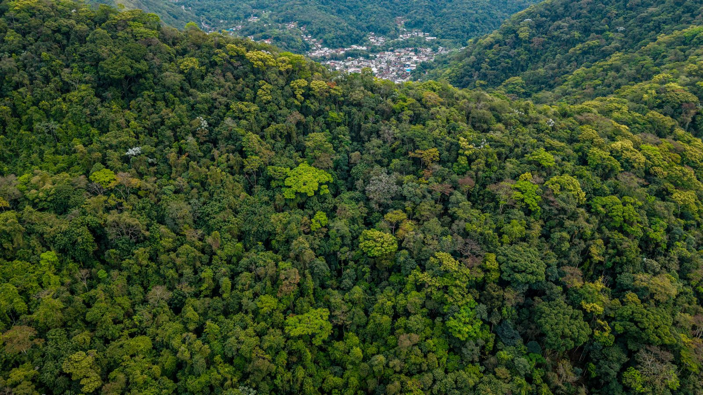

Itapema · Meio Ambiente
Itapema · Meio AmbienteEducação ambiental leva 1.100 estudantes de Itapema para dentro do Refúgio de Vida Silvestre
A mesma Mata Atlântica, vista pelo lado de quem estuda dentro dela.
A Mata Atlântica em Pé vistoriou 178 áreas no estado entre 10 e 26 de agosto. O trabalho é do Ministério Público de Santa Catarina com a Polícia Militar Ambiental, e a escolha de onde ir parte de alerta de satélite.
Em 30 segundos · Modo de Leitura, formato original Santa Informa
A Operação Mata Atlântica em Pé 2026 divulgou o resultado em Santa Catarina.
Foram mais de 380 hectares autuados ou embargados no estado.
A fiscalização vistoriou 178 áreas.
O período foi de 10 a 26 de agosto.
As multas e demais medidas somam R$ 2.724.500.
A operação acontece ao mesmo tempo em 17 estados do bioma.
Aqui, o trabalho é do MPSC com a Polícia Militar Ambiental.
As áreas saem de alerta de desmatamento, entre eles o MapBiomas Alerta.
Santa Catarina tem hoje 249 alertas de desflorestamento nesse sistema.
Quem é autuado responde nas esferas administrativa, cível e criminal.
Meio AmbientePublicada em Redação Santa Informa

O Ministério Público de Santa Catarina divulgou na sexta-feira, 28 de agosto, o resultado da Operação Mata Atlântica em Pé 2026 no estado. Entre 10 e 26 de agosto, a fiscalização vistoriou 178 áreas e autuou ou embargou mais de 380 hectares com desmatamento ilegal. As multas e as demais medidas administrativas somam R$ 2.724.500.
As áreas não são sorteadas. Elas saem de alerta de desmatamento, entre eles os dados do MapBiomas Alerta, um sistema que compara imagem de satélite de datas diferentes e aponta onde a mata sumiu. A equipe só vai ao local depois que o alerta aparece. Hoje o estado tem 249 alertas de desflorestamento nesse sistema. É o que o Ministério Público chama de fiscalização híbrida, feita em parte no computador e em parte no barranco.
Confirmada a irregularidade, o responsável fica sujeito a multa e a sanção administrativa, além da reparação integral do dano ambiental e climático. O caso ainda é apurado nas esferas cível e criminal. Há também efeito no bolso pelo lado do crédito: restrição no Cadastro Ambiental Rural e limitação de acesso a crédito rural, entre outras medidas previstas na legislação ambiental.
Em Santa Catarina, o trabalho é do MPSC, pelo Centro de Apoio Operacional do Meio Ambiente, com a Polícia Militar Ambiental. A coordenação nacional é da associação que reúne membros do Ministério Público de meio ambiente, com o Ministério Público de Minas Gerais, e tem parceria da Fundação SOS Mata Atlântica. Ao todo são 17 estados alcançados pelo bioma. Para a promotora de Justiça Stephani Gaeta Sanches, coordenadora do CME, "os resultados obtidos demonstram a importância da fiscalização integrada entre os órgãos na proteção do meio ambiente".
Itapema, Porto Belo, Bombinhas e toda a Costa Esmeralda estão dentro do bioma Mata Atlântica. É a mata do morro atrás do bairro, a restinga que segura a duna e a vegetação da beira do rio. Não é só paisagem. Mata na encosta segura barranco, e o fim de semana de chuva forte no estado acabou de lembrar disso. Cada alerta de satélite que vira vistoria é um pedaço de encosta a menos no risco de escorregar.
O resumo de 30 segundos está no topo e a versão completa é o texto acima. Aqui ficam as três leituras da casa sobre o mesmo assunto.
Clara, a otimista
O satélite chegou na fiscalização ambiental, e isso muda o jogo. Antes dependia de denúncia, de alguém ver e contar. Agora a imagem compara o antes e o depois e mostra o clarão no meio do verde. Quem cuida da mata ganha uma testemunha que não dorme.
E o número de áreas visitadas em 16 dias, 178, mostra que não é operação de fachada. Deu trabalho, envolveu polícia, promotor e gente de campo. Para quem mora perto de morro, saber que existe essa rotina é um sossego a mais.
Seu Prudêncio, o criterioso
Merece atenção a diferença entre dois números do próprio texto. São 249 alertas de desflorestamento abertos no estado e 178 áreas vistoriadas nessa rodada. A conta não fecha por si só, e é natural que não feche, porque alerta velho e alerta novo se misturam. Mas mostra que a fila existe e que ela precisa de gente para andar.
Vale acompanhar também o caminho do dinheiro. Multa aplicada não é multa paga. Entre a autuação e o depósito no caixa passa recurso administrativo, discussão judicial e prazo. Uma sugestão útil ao Ministério Público: publicar daqui a alguns meses quanto dos R$ 2,7 milhões virou receita e quantas áreas foram efetivamente recuperadas. É o dado que fecha a história.
E é justo reconhecer o que já foi feito direito. O anúncio trouxe período exato, número de áreas, valor total e a origem técnica dos casos. Divulgação com esse nível de detalhe permite cobrança futura, e é bem melhor do que a nota vaga de que a fiscalização foi intensificada.
Caco, o sarcástico
Descobriram que dá para ver desmatamento do espaço. Foi por pouco, porque o pessoal já estava quase contratando um vizinho fofoqueiro para cada morro do estado.
Mata Atlântica em Pé é o nome da operação. Nome bom, direto. Bem melhor que Operação Verde Vivo Sustentável Integrado Fase Dois.
Mais de 380 hectares autuados em 16 dias. Só faltava alguém avisar às árvores que a ajuda estava a caminho, elas com certeza estavam aflitas.
Fontes: Ministério Público de Santa Catarina, notícia publicada em 28 de agosto de 2026, de onde saem o período de 10 a 26 de agosto, as 178 áreas vistoriadas, os mais de 380 hectares autuados ou embargados, o valor de R$ 2.724.500 em multas e demais medidas, os 17 estados alcançados pela operação, o uso do MapBiomas Alerta, os 249 alertas de desflorestamento em Santa Catarina, a participação da Polícia Militar Ambiental e do Centro de Apoio Operacional do Meio Ambiente, as consequências administrativas, cíveis e criminais para o autuado e a frase da promotora de Justiça Stephani Gaeta Sanches. A foto do topo é imagem ilustrativa de banco gratuito e não registra o fato noticiado.
Itapema · Meio AmbienteA mesma Mata Atlântica, vista pelo lado de quem estuda dentro dela.
 Itapema · Meio Ambiente
Itapema · Meio AmbienteVistoria de encosta é justamente um dos itens combinados na região.
 Porto Belo · Poder Público
Porto Belo · Poder PúblicoEncosta e área de risco também estão no plano da cidade vizinha.